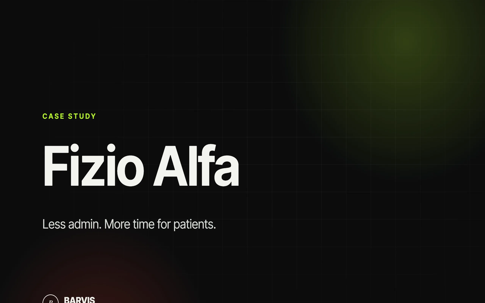
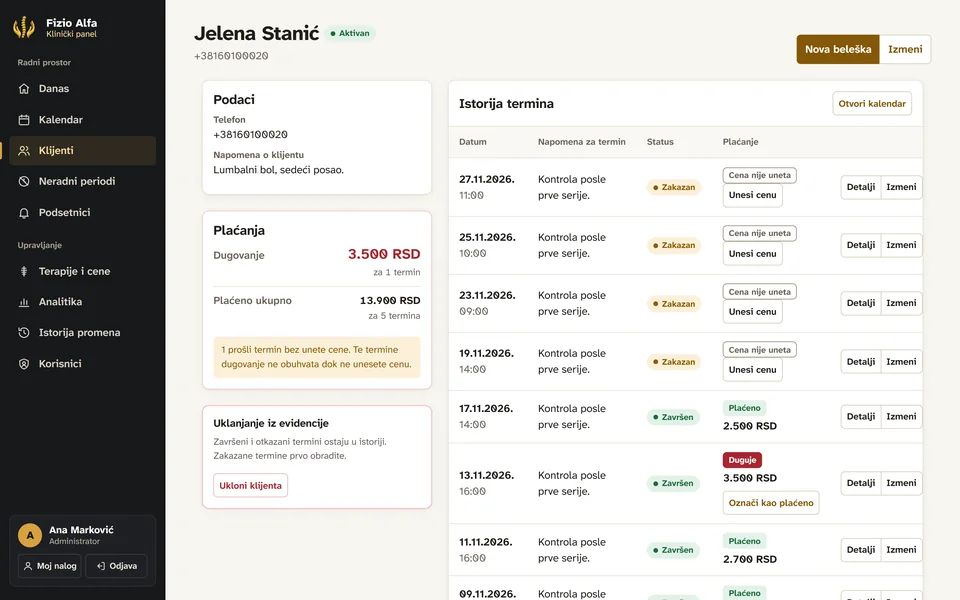

Case study · Client project
Fizio Alfa Less admin. More time for patients.
- Client
- Physiotherapy practice
- My role
- Everything, from the first talk to the server
- Platforms
- Desktop, tablet and phone
- Technology
- Django, PostgreSQL, Docker
- Hosting
- Private server, staff only

48 seconds through the system: today’s schedule, calendar, payments, client records, analytics and phone. Fictional data.
01 · Context
A team that works with people, not spreadsheets.
Fizio Alfa came out of conversations with the team of a physiotherapy practice and was built around the way they work — not around a ready-made template.
The problem: appointments, clients and payments were kept separately. It was hard to see who was booked, what had been done and who had paid, and every check meant going through several sources.
- Who is booked and when — in one place
- What was done — in another
- Who has paid — in a third
- The whole team sees the same week; double bookings are prevented
- Choosing the therapies adds up the price
- The balance shows in the client record, no maths
02 · Solution
One panel for the whole team.
A shared calendar, client records, quick pricing per therapy, an overview of balances and reminders on the phone. Each part was built around one everyday task in the practice.
Calendar
The same week for everyone.
All therapists see the same schedule, with appointments in status colours. The system does not allow two appointments at the same time for the same therapist.

Payments
A price in seconds.
After an appointment, the therapies done are ticked and the system adds up the amount from the practice’s price list. No calculator, no copying into a spreadsheet.

Client record
History and balance in one place.
All of a client’s appointments, therapies done and what is left to pay. “How much do I owe?” has an answer in a second.

Phone and reminders
The schedule in your pocket.
Today’s agenda and a new appointment in one tap. Each therapist gets reminders only for their own appointments, even when the app is closed.

Reminders arrive as notifications on phone and desktop (Web Push).
03 · Studio role
One person, from the first talk to the server.
- 01Talking with the teamHow they work today and where time gets lost.
- 02DesignScreens built around a real day in the practice.
- 03DevelopmentCalendar, records, payments, roles, change history.
- 04LaunchA private server available to staff only.
- 05BackupsRegular database backups.
- 06MaintenanceFixes and new features as the business grows.
- Django
- PostgreSQL
- Docker
- Web Push
- Private server
About results: I do not publish time-saving figures or client quotes until the practice confirms them. Everything you see here is the real system, shown with made-up data.